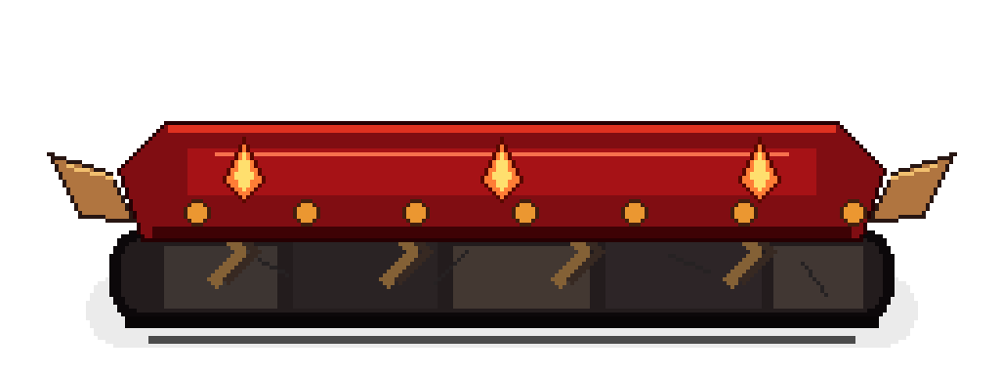
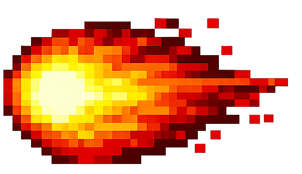

Personagem
Controle o heroi pelas plataformas e avance com cuidado.
Jogo em Pygame
Um jogo de plataforma cheio de fases perigosas, portais, espinhos e desafios que testam reflexo e paciencia.
Aventura e armadilhas
Devil's keep mistura visual pixel art, controles simples e obstaculos que aparecem no caminho do jogador. Cada fase pede atencao, tentativa e coragem para continuar.
Controle o heroi pelas plataformas e avance com cuidado.

Desvie das armadilhas que tornam cada fase mais dificil.

Alcance o portal para completar o desafio e seguir em frente.
Galeria


Como funciona

Encostar neles faz o jogador morrer e tentar de novo.
Servem como barreiras, plataformas e armadilhas surpresa.
Podem estar escondidos e aparecer quando o jogador avanca.

Leva para a proxima fase quando o jogador consegue chegar nele.

Impulsionam o jogador para alcancar saltos maiores e evitar espinhos no ar.

Podem sumir ao encostar, enganar o jogador ou matar quando fazem parte da armadilha.
Surgem durante a fase e empurram o jogador para buracos ou espinhos.
Permitem pausar, reiniciar a fase e voltar para a selecao de niveis.
Video
Download
O arquivo abaixo contem o projeto do jogo em Pygame com codigo, imagens e sons necessarios para executar.
Arquivo ZIP do jogo preparado para download.
pip install pygame
python jogo.py
Se `python jogo.py` nao funcionar, tente `py jogo.py` no Windows.
Historico do projeto
Linha do tempo criada a partir dos commits do repositorio do jogo, mostrando como Devil's keep evoluiu durante o projeto.
README, primeiros testes, estrutura inicial e criacao das primeiras classes.
Commits: a89db37, 7ce471a, 5729133, 2df4253
Storyboard no README, ajustes de documentacao, sprites do jogador e gitignore.
Commits: bcf72d6, 7ebe3dd, 6487bec
Tela do jogo, imagens de portal e espinho, e ajustes nas classes principais.
Commits: 430ff5b, bb431ca
Hitboxes, espinho movel, frames de movimento e arquivo para desenhar telas.
Commits: f04690d, fb19278, 1a8bdcd, 83ffeb5, 13bd295
Correcao de colisao com portal e paredes, nascimento do personagem e clique nas telas iniciais.
Commits: f018b3d, 920299b
Efeitos sonoros, musicas, tela de niveis e melhorias gerais de jogabilidade.
Commits: 6607fc8, 006bf74
Imagens recriadas para resolver fundo preto, ajustes de hitbox e nova tela de morte.
Commit: 3c59279
Correcoes na morte do jogador, niveis 1 ao 10, novo design de parede e ajuste do nivel 6.
Commits: 531687e, 24f08db, 1664374, 7fcb3e7
Sons nas animacoes, joystick, tela de vitoria, ranking e fases 7 a 12 corrigidas.
Commits: a043d96, 1130109, 7b94120, eff580f, 2ab5e36
Fases 13, 14 e 15, ajuste da fase 12, novos sprites e novas imagens.
Commits: 472fb2b, 2afece0, 04ade16, 3df51aa, 06656a1
Equipe
Participante do desenvolvimento de Devil's keep.
Participante do desenvolvimento de Devil's keep.